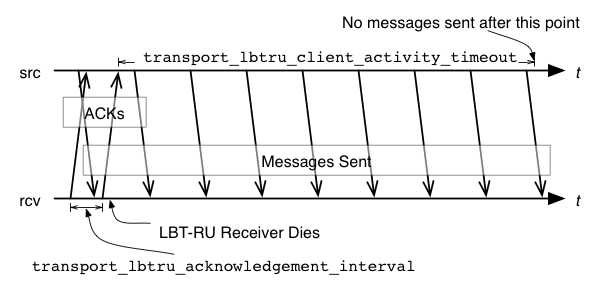

LBT-RU's operational options closely model LBT-RM's. The descriptions and illustrations in Transport LBT-RM Operation Options generally apply to LBT-RU, with appropriate option name changes.
The following options are present for LBT-RU but not LBT-RM:
The image below illustrates the timing of the latter two LBT-RU unique options:

Reference <-
transport_lbtru_acknowledgement_interval (receiver) <-
- The interval between sending acknowledgements.
- For LBT-RU transport session only. Each client continually sends acknowledgements to let the source know that the client is still alive. This option affects the transport session underlying the receiver rather than the receiver itself. The transport session uses the value from the first receiver created on the session and ignores subsequent receivers' configuration.
- Refer to Receiver Object for additional information.
| Scope: | receiver |
| Type: | lbm_ulong_t |
| Units: | milliseconds |
| Default value: | 500 (0.5 seconds) |
| When to Set: | Can only be set during object initialization. |
transport_lbtru_activity_timeout (receiver) <-
- The maximum time that an LBT-RU session may be quiescent before it is deleted and an EOS event is delivered for all topics using this transport session.
- For LBT-RU transport sessions only. This option affects the transport session underlying the receiver rather than the receiver itself. The transport session uses the value from the first receiver created on the session and ignores subsequent receivers' configuration.
- Refer to Receiver Object for additional information.
| Scope: | receiver |
| Type: | lbm_ulong_t |
| Units: | milliseconds |
| Default value: | 60000 (60 seconds) |
| When to Set: | Can only be set during object initialization. |
transport_lbtru_client_activity_timeout (source) <-
- The maximum time that an LBT-RU client may be quiescent, i.e. not sending ACKs, before the sender assumes that it is dead and stops sending to it.
- This option affects the transport session underlying the source rather than the source itself. The transport session uses the value from the first source created on the session and ignores subsequent sources' configuration.
- Refer to Source Object for additional information.
| Scope: | source |
| Type: | lbm_ulong_t |
| Units: | milliseconds |
| Default value: | 10000 (10 seconds) |
| When to Set: | Can only be set during object initialization. |
transport_lbtru_client_map_size (source) <-
- The size of the hash table used to store client information and state.
- This option affects the transport session underlying the source rather than the source itself. The transport session uses the value from the first source created on the session and ignores subsequent sources' configuration.
- Refer to Source Object for additional information.
| Scope: | source |
| Type: | size_t |
| Units: | table entries |
| Default value: | 7 |
| When to Set: | Can only be set during object initialization. |
transport_lbtru_coalesce_threshold (source) <-
- UM passes implicitly batched messages to the Operating System sendmsg() as a set unless the size of the set exceeds the coalescing threshold at which point the messages are coalesced and passed to the O/S as one copy.
- This option accommodates the different number of iovecs supported by different O/Ss. Tuning this option balances the efficiency of less iovecs handled by the OS vs. the expense of an additional copy operation of the messages before sending. The default value is also the maximum allowable value for Solaris, AIX and HPUX. For Linux and Microsoft Windows and Darwin, the maximum allowable value is 1023. These maximum allowable values are one less than what the O/S provides. This option affects the transport session underlying the source rather than the source itself. The transport session uses the value from the first source created on the session and ignores subsequent sources' configuration.
- Refer to Source Object for additional information.
| Scope: | source |
| Type: | int |
| Units: | number of messages |
| Default value: | 15 |
| When to Set: | Can only be set during object initialization. |
transport_lbtru_connect_interval (receiver) <-
- The interval between sending connection requests.
- For LBT-RU transport session only. This option affects the transport session underlying the receiver rather than the receiver itself. The transport session uses the value from the first receiver created on the session and ignores subsequent receivers' configuration.
- Refer to Receiver Object for additional information.
| Scope: | receiver |
| Type: | lbm_ulong_t |
| Units: | milliseconds |
| Default value: | 100 (0.1 seconds) |
| When to Set: | Can only be set during object initialization. |
transport_lbtru_data_rate_limit (context) <-
- Maximum aggregate transmission rate of all LBT-RU sessions original data for this particular context.
- Refer to Rate Controls for additional information about the UM rate limiting algorithm.
- Note: For backwards compatibility with earlier versions, the lbm_context_attr_setopt() function will accept both 32 and 64 bit values for this option. Note however that a 32-bit value can only specify a rate limit a little larger than 4 Gbps.
| Scope: | context |
| Type: | lbm_uint64_t |
| Units: | bits per second |
| Default value: | 10000000 (10 Mbps) |
| When to Set: | Can only be set during object initialization. |
transport_lbtru_datagram_max_size (context) <-
- The maximum UDP datagram payload size that can be generated for a LBT-RU transport session. Note that this does not include UDP, IP, or packet overhead added by the network stack. The default value is 8192, the minimum is 500 bytes, and the maximum is 65535.
- See Message Fragmentation and Reassembly for more information.
- Informatica does not recommend setting datagram max size options to the network MTU. See Datagram Max Size and Network MTU.
- Warning
- When the DRO is in use, it is recommended that all UM applications and components (including the DRO and Persistent Store) share the same maximum datagram size setting. See Protocol Conversion.
- Users of kernel-bypass drivers should also see Dynamic Fragmentation Reduction.
| Scope: | context |
| Type: | lbm_uint_t |
| Units: | bytes |
| Default value: | 8192 |
| When to Set: | Can only be set during object initialization. |
| Version: | This option was implemented in LBM 4.1/UME 3.1/UMQ 1.1 |
transport_lbtru_maximum_connect_attempts (receiver) <-
- The maximum number of connect attempts to make before this transport session is deleted and an EOS event is delivered for all topics using this transport session.
- This option affects the transport session underlying the receiver rather than the receiver itself. The transport session uses the value from the first receiver created on the session and ignores subsequent receivers' configuration.
- Refer to Receiver Object for additional information.
| Scope: | receiver |
| Type: | lbm_ulong_t |
| Default value: | 600 |
| When to Set: | Can only be set during object initialization. |
transport_lbtru_rate_interval (context) <-
- Period that LBT-RU rate limiter runs.
- When a source is constrained by the rate limiter, the traffic can become very "bursty", with periods of intense traffic alternating with idle periods of no traffic. These periods average to the setting of the rate limiter.
- Reducing the rate interval increases the frequency of the bursts while reducing the intensity of those bursts, resulting in the same average. The reduction in burst intensity can reduce the risk of loss, but can also increase average latency and CPU load. Refer to Rate Controls for additional information about the UM rate limiting algorithm.
- Note: technically, any value which divides evenly into 1000 is accepted by UM for a rate interval. However, values other than those listed below should not be used except as directed by Informatica Support.
| Scope: | context |
| Type: | lbm_ulong_t |
| Units: | milliseconds |
| Default value: | 100 |
| When to Set: | Can only be set during object initialization. |
| String value | Integer value | Description |
| "5" | 5 | LBT-RM rate limiter runs every 5 milliseconds.
|
| "10" | 10 | LBT-RU rate limiter runs every 10 milliseconds.
|
| "20" | 20 | LBT-RU rate limiter runs every 20 milliseconds.
|
| "50" | 50 | LBT-RU rate limiter runs every 50 milliseconds.
|
| "100" | 100 | LBT-RU rate limiter runs every 100 milliseconds. Default for all. |
transport_lbtru_recycle_receive_buffers (context) <-
- Enables the use of buffer recycling for socket operations.
- See Receive Buffer Recycling for more information, including restrictions on the use of this feature.
| Scope: | context |
| Type: | int |
| When to Set: | Can only be set during object initialization. |
| Version: | This option was implemented in UM 6.12 |
| Value | Description |
| 1 | Use buffer recycling.
|
| 0 | Buffer recycling is not used. Default for all. |
transport_lbtru_retransmit_rate_limit (context) <-
- Maximum aggregate transmission rate of all LBT-RU sessions retransmissions for this particular context.
- This should always be less than the value used for original data. Refer to Rate Controls for additional information about the UM rate limiting algorithm.
- Note: For backwards compatibility with earlier versions, the lbm_context_attr_setopt() function will accept both 32 and 64 bit values for this option. Note however that a 32-bit value can only specify a rate limit a little larger than 4 Gbps.
| Scope: | context |
| Type: | lbm_uint64_t |
| Units: | bits per second |
| Default value: | 5000000 (5 Mbps) |
| When to Set: | Can only be set during object initialization. |
transport_lbtru_sm_maximum_interval (source) <-
- The maximum interval between LBT-RU session messages.
- In lieu of data being sent, LBT-RU sends session messages to each client to inform them of sequence numbers and to let receivers know that the sender is still transmitting. This option affects the transport session underlying the source rather than the source itself. The transport session uses the value from the first source created on the session and ignores subsequent sources' configuration.
- Refer to Source Object for additional information.
| Scope: | source |
| Type: | lbm_ulong_t |
| Units: | milliseconds |
| Default value: | 10000 (10 seconds) |
| When to Set: | Can only be set during object initialization. |
transport_lbtru_sm_minimum_interval (source) <-
- The minimum interval between LBT-RU session messages.
- In lieu of data being sent, LBT-RU sends session messages to each client to inform them of sequence numbers and to let receivers know that the sender is still transmitting. This option affects the transport session underlying the source rather than the source itself. The transport session uses the value from the first source created on the session and ignores subsequent sources' configuration.
- Refer to Source Object for additional information.
| Scope: | source |
| Type: | lbm_ulong_t |
| Units: | milliseconds |
| Default value: | 200 (0.2 seconds) |
| When to Set: | Can only be set during object initialization. |
transport_lbtru_use_session_id (source) <-
- Control whether a session ID is used for LBT-RU Transport sessions.
- This option should be set to 0 if a version 3.3 (and beyond) LBT-RU source must interoperate with a version pre-3.3 receiver.
| Scope: | source |
| Type: | int |
| When to Set: | Can only be set during object initialization. |
| Version: | This option was implemented in UM 3.3 |
| Value | Description |
| 1 | Indicates the application desires LBT-RU to use a session ID. Default for all. |
| 0 | Indicates the application does not desire LBT-RU to use a session ID. For use when version pre-3.3 receivers must be used with TCP sources that are version 3.3 and beyond.
|